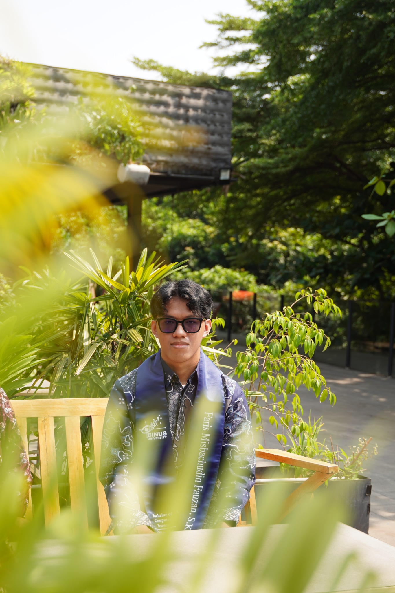

Bringing clarity to factory quality management.
A PORTFOLIO OF IDEAS & EXECUTIONBASED IN INDONESIA ↗
Thoughtful code.
Purposeful
experiences.
I’m Faris, a software engineer connecting thoughtful design with practical technology. I build things that work beautifully, inside and out.
+WEB DEVELOPMENT / MOBILE / IoT
GOOD SOFTWARE IS A COMPOSITION OF SMALL, CONSIDERED DECISIONS.SCROLL TO EXPLORE
01 / SELECTED WORK
Built with intention.
A few projects where real-world problems
meet thoughtful, practical solutions.
Connecting water meters, people, and better decisions.
A considered approach to everyday attendance.
PROJECT VISUALS ARE INTERFACE STUDIES, NOT PRODUCTION SCREENSHOTS.
Further explorations.
FROM MY PROJECT PORTFOLIO / 05
02 / A LITTLE ABOUT MEAn engineer's mind.
An engineer's mind.
A maker's curiosity.
I'm Faris Misbachudin Fauzan, a Computer Science graduate from BINUS University focused on web and mobile application development.
During my software engineering internship, I developed ERP features across purchasing, sales, inventory, and stocktaking. I also worked across frontend, backend, and mobile applications, built APIs for vendor integrations, and tested features from requirements through implementation.
I value careful planning, clear organization, and collaboration. My projects extend that curiosity into connected water systems, face recognition, and IoT.
TOOLS OF THE TRADE
LaravelFlutterReact.jsVue.jsPHPPythonJavaScriptC/C++MySQL
PROBLEM SOLVING / TEAMWORK / ADAPTABILITY / TIME MANAGEMENT
03 / EXPERIENCE & EDUCATIONA foundation
A foundation
in making.
Software Engineer Intern
CV Inti Ahsan TeknologiDeveloped and maintained ERP features for client systems across web and mobile. Contributed to two applications from scratch, extended existing projects, built APIs for external vendors, and performed feature testing.
Bachelor of Computer Science
Bina Nusantara UniversityStudied software engineering, object-oriented programming, mobile embedded systems, hybrid application development, and mobile and game development.
BAHASA INDONESIA / NATIVE ENGLISH / SECOND LANGUAGE
03 / WHAT’S NEXT?GOOD THINGS START WITH A CONVERSATION.
Have something
in mind?
LET’S TALKA project, an idea, or a simple hello.
I'd love to hear from you.